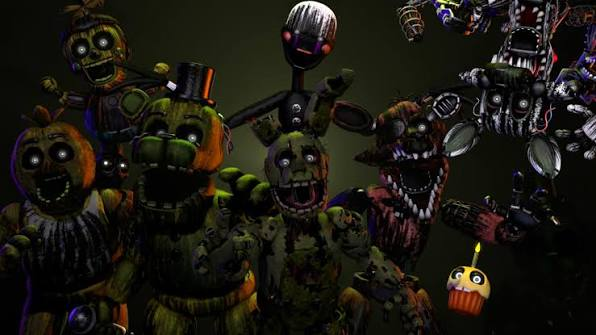
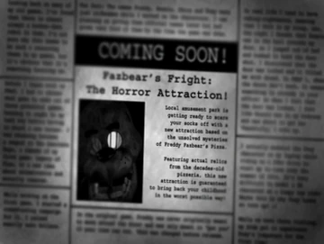

FNAF 3 - FAZBEAR'S FRIGHT

The Horror Attraction
Thirty years after the closure of Freddy Fazbear’s Pizza, a horror attraction is created to capitalize on the myths and tragedies surrounding the franchise. Old props, burnt animatronics, and forgotten history are collected to give visitors a “real experience” of fear.

Fazbear’s Fright
The attraction is built from the remains of old Freddy Fazbear locations. What was meant to be entertainment quickly becomes something far more dangerous when something real is discovered inside the ruins.
Deep inside the building, a sealed springlock suit is found — containing the remains of William Afton. He is no longer human, yet not fully machine either.
Springtrap
The main antagonist trapped inside the suit. Driven by rage and survival.
Phantom Animatronics
Hallucinations caused by stress and deteriorating environment.
The Fire Ending
Henry attempts to end everything by burning Fazbear’s Fright to the ground.